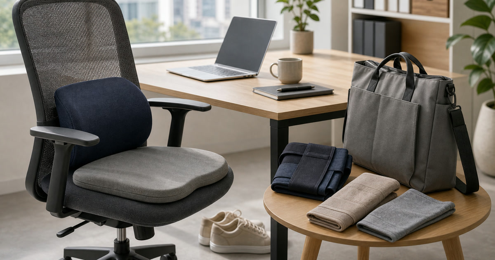

久坐工作日的腰背與膝蓋支撐：護具、坐墊、鞋包重量怎麼看
腰背與膝蓋支撐用品只能協助日常配置，選購前要先看疼痛是否需要專業協助，再比較護具、坐墊與鞋包重量。

久坐工作日的不舒服，很容易讓人想立刻買護腰、護膝或坐墊。但日常支撐用品不是診斷，也不是治療；它們更像是把工作椅、桌高、包重與移動方式重新安排。本文用保守的順序看腰背、膝蓋、坐墊與鞋包重量，避免把支撐用品寫成萬能答案。
先分辨不舒服是否已超出日常調整
若疼痛、麻木、無力或活動受限持續出現，應先尋求專業協助，不應用購物清單自行處理。日常支撐用品只能放在生活配置與使用舒適度裡討論。
BELEX、大來護具 Mo+ 與 Sports Support 可作為護具與支撐用品比較入口；本文不承諾矯正、治療、止痛或醫療效果。
Elite Fashion 編輯團隊的具體判斷是：先看疼痛是否需要專業協助，再看日常支撐物是否只是減少摩擦。 這讓 BELEX - 專業醫療護具品牌、Jasper 大來護具 Mo+ 官方商店 │護膝 護腰 護踝 與其他選項能被放回同一個生活問題裡比較，而不是只看單一商品照片。
下單前仍要回商品頁確認規格、尺寸、材質、活動、庫存與配送；若資訊不足，先暫緩，比把不確定的物品帶回家更成熟。
- 先確認使用位置與拿取頻率。
- 再看保存、清潔、線材或收納條件。
- 最後才比較品牌、活動與預算。
坐墊與腰靠要和椅子一起看
坐墊不是放上去就完成。椅面深度、桌高、螢幕位置、雙腳是否能踩穩，都會影響使用感。
完美主義可作為居家或辦公家具補充參考；尺寸、材質、承重與適用條件仍需回商品頁確認。
Elite Fashion 編輯團隊的具體判斷是：先看疼痛是否需要專業協助，再看日常支撐物是否只是減少摩擦。 這讓 BELEX - 專業醫療護具品牌、Jasper 大來護具 Mo+ 官方商店 │護膝 護腰 護踝 與其他選項能被放回同一個生活問題裡比較，而不是只看單一商品照片。
下單前仍要回商品頁確認規格、尺寸、材質、活動、庫存與配送；若資訊不足，先暫緩，比把不確定的物品帶回家更成熟。
- 先確認使用位置與拿取頻率。
- 再看保存、清潔、線材或收納條件。
- 最後才比較品牌、活動與預算。
Elite 嚴選
膝蓋支撐要看使用時刻
護膝或支撐配件可能出現在通勤、運動、久站或搬重物時，但每種情境的需求不同。把它當成全天候用品前，先確認穿戴時間、透氣與活動限制。
Cool Sport Support 巴酷運動與 Sports Support 可在運動配件情境中比較；涉及個人身體狀況時，請以專業建議為準。
Elite Fashion 編輯團隊的具體判斷是：先看疼痛是否需要專業協助，再看日常支撐物是否只是減少摩擦。 這讓 BELEX - 專業醫療護具品牌、Jasper 大來護具 Mo+ 官方商店 │護膝 護腰 護踝 與其他選項能被放回同一個生活問題裡比較，而不是只看單一商品照片。
下單前仍要回商品頁確認規格、尺寸、材質、活動、庫存與配送；若資訊不足，先暫緩，比把不確定的物品帶回家更成熟。
- 先確認使用位置與拿取頻率。
- 再看保存、清潔、線材或收納條件。
- 最後才比較品牌、活動與預算。
包包重量常是被忽略的支撐問題
筆電、充電器、水壺、文件和整理包每天累積在同一側肩膀上，比單一護具更容易被忽略。先減重，再談支撐用品，才是更成熟的順序。
UD LAB 可放在通勤小包與分層情境裡看，但是否適合承重或長時間背負仍要看商品頁。
Elite Fashion 編輯團隊的具體判斷是：先看疼痛是否需要專業協助，再看日常支撐物是否只是減少摩擦。 這讓 BELEX - 專業醫療護具品牌、Jasper 大來護具 Mo+ 官方商店 │護膝 護腰 護踝 與其他選項能被放回同一個生活問題裡比較，而不是只看單一商品照片。
下單前仍要回商品頁確認規格、尺寸、材質、活動、庫存與配送；若資訊不足，先暫緩，比把不確定的物品帶回家更成熟。
- 先確認使用位置與拿取頻率。
- 再看保存、清潔、線材或收納條件。
- 最後才比較品牌、活動與預算。
常見錯誤：把護具當成工作流程補丁
若椅子高度不對、螢幕太低、長時間不休息，護具很容易被期待承擔太多。先調整工作流程，再決定是否需要支撐用品。
每五十到六十分鐘起身走動、重新放鬆肩頸與調整坐姿，通常比一直加裝用品更可持續。
Elite Fashion 編輯團隊的具體判斷是：先看疼痛是否需要專業協助，再看日常支撐物是否只是減少摩擦。 這讓 BELEX - 專業醫療護具品牌、Jasper 大來護具 Mo+ 官方商店 │護膝 護腰 護踝 與其他選項能被放回同一個生活問題裡比較，而不是只看單一商品照片。
下單前仍要回商品頁確認規格、尺寸、材質、活動、庫存與配送；若資訊不足，先暫緩，比把不確定的物品帶回家更成熟。
- 先確認使用位置與拿取頻率。
- 再看保存、清潔、線材或收納條件。
- 最後才比較品牌、活動與預算。
下單前的保守檢查
確認身體狀況、使用時刻、穿戴時間、清潔方式、尺寸與退換貨條件。任何涉及不適或疼痛的問題，都不要只靠商品描述判斷。
價格、規格、材質、活動、庫存、適用限制與配送請以下單前商品頁公告為準。
Elite Fashion 編輯團隊的具體判斷是：先看疼痛是否需要專業協助，再看日常支撐物是否只是減少摩擦。 這讓 BELEX - 專業醫療護具品牌、Jasper 大來護具 Mo+ 官方商店 │護膝 護腰 護踝 與其他選項能被放回同一個生活問題裡比較，而不是只看單一商品照片。
下單前仍要回商品頁確認規格、尺寸、材質、活動、庫存與配送；若資訊不足，先暫緩，比把不確定的物品帶回家更成熟。
- 先確認使用位置與拿取頻率。
- 再看保存、清潔、線材或收納條件。
- 最後才比較品牌、活動與預算。
同主題品牌參考
BELEX - 專業醫療護具品牌
護腰怎麼選、媽媽手護具、膝蓋支撐、長輩與運動防護
瀏覽品牌Jasper 大來護具 Mo+ 官方商店 │護膝 護腰 護踝
護膝護腰比較、久站族支撐、運動防護入門
瀏覽品牌Sports Support 健身裝備 護腕補劑腰帶
重訓腰帶怎麼選、護腕用途、健身新手裝備清單
瀏覽品牌Cool Sport Support 巴酷運動
運動護具入門、健身支撐配件、跑步/重訓防護
瀏覽品牌UD LAB
EDC包款、通勤小包、戶外方包、環保快扣包
瀏覽品牌完美主義 官方直營
租屋族、小家庭、新居裝潢族、收納需求者
瀏覽品牌FAQ
護腰或護膝可以治療疼痛嗎？
本文不做治療、矯正或止痛承諾。若疼痛、麻木或活動受限持續出現，請先尋求專業協助。
坐墊需要搭配椅子看嗎？
需要。椅面深度、桌高、螢幕位置與腳部支撐都會影響使用感。
通勤包重量和腰背有關嗎？
可能影響日常負重感受。建議先減少不必要物品，再看包款分層與支撐用品。
下一步建議
久坐支撐用品只能協助日常配置，不應取代專業診斷。 先用本文順序縮小範圍，再回商品頁確認規格、價格、活動與庫存。
重要警語
本文含品牌／商品導購連結；商品資訊、價格、規格、活動與庫存請以商品頁公告為準。不承諾矯正、治療、止痛或醫療效果。
本文含品牌／商品導購連結；若你透過部分商品連結前往選購，Elite Fashion 可能取得合作收益。本文仍以編輯判斷與使用情境整理為主，價格、規格、活動與庫存請以商品頁公告為準。